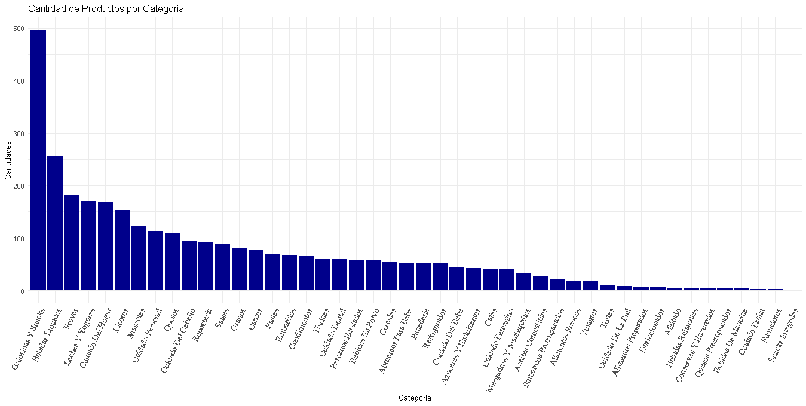

Análisis de la evolución de precios de la canasta básica: Un enfoque comparativo entre supermercados.
Crespo, Leonardo - 26.260.451
Gómez, Alexandra - 29.765.256
Goncalves, Ignacio - 27.600.050
Lara, Roselyn - 30.138.648
Ruiz, Halena - 29.756.414
Identificación del Problema
Las variaciones de precios, en situaciones normales, son o bien ajustes naturales o presiones inflacionarias moderadas que permiten a los agentes económicos adaptarse en cierta medida. Sin embargo, en las últimas décadas, la economía venezolana ha sufrido constantemente variaciones de precios que se han transformado en fuentes de incertidumbre extrema y de empobrecimiento generalizado. El nivel de precios no solo aumenta constantemente, sino que las magnitudes de estos incrementos y la frecuencia con la que ocurren son impredecibles, lo cual impide a los agentes económicos formar expectativas sólidas y los hace enfrentarse a un constante y pronunciado declive de su poder adquisitivo.
Esta variación de precios se ha visto potenciada por un conjunto de factores interrelacionados como el período de hiperinflación sostenida, que destruyó la confianza en la moneda, la implementación errada de controles de precios, que generaron escasez generalizada y el crecimiento de mercados informales. Otra de las razones fue la contracción de la producción nacional y el control excesivo del sistema cambiario, lo que contribuye a la distorsión de los mecanismos de fijación de precios y disponibilidad de productos.
Si bien en la actualidad ya no estamos en un en un escenario de hiperinflación, la variación de los precios sigue siendo volátil, presentando aumentos significativo en diversas áreas, particularmente en alimentos, lo que impacta en el acceso de la canasta básica de alimentos para cubrir los niveles de subsistencia.
Ante este escenario surgen interrogantes: ¿Están subiendo los precios? ¿En qué períodos hay mayores aumentos? ¿Las instituciones de venta de alimentos formales, entendidos como supermercados, automercados o hipermercados, cuentan con precios accesibles y competitivos para que los hogares puedan adquirir los productos de la canasta básica?
Elección de los Datos y la Canasta Básica
Este estudio aspira a generar un aporte empírico significativo para la comprensión de la evolución de precios. La investigación se justifica por la imperante necesidad de comprender la dinámica evolutiva de los precios en Venezuela, un fenómeno caracterizado por una marcada volatilidad directamente atribuible a la compleja coyuntura política y sus repercusiones macroeconómicas. Ante este escenario de inestabilidad, la disponibilidad y el análisis sistemático de datos sobre precios al consumidor se tornan cruciales para evaluar su impacto en el poder adquisitivo y el bienestar social de los hogares.
La selección de DataPrecio, una plataforma digital que consolida y recopila precios de productos en diversos establecimientos minoristas, se fundamenta en su capacidad para ofrecer una granularidad y accesibilidad de datos indispensables para el análisis microeconómico del consumo. Para garantizar la representatividad y la robustez del estudio longitudinal, se procedió a la elección de tres supermercados que exhiben una trayectoria operativa consolidada y una presencia significativa en el mercado: Autosmercados Plazas, Central Madeirense y Gama Supermercados.
La construcción de una canasta básica se realizó bajo criterios de consumo racional orientados a los hogares de cinco miembros de esta investigación, priorizando la identificación de productos comunes y comparables entre los supermercados seleccionados. A partir de esta investigación, surge como interrogante principal determinar cuál de los supermercados analizados ofrece la opción más ventajosa para la adquisición de la cesta básica representativa.
Obtención y Filtrado de los Datos
Obtención
El proceso de extracción de datos se realizó mediante un scraper diseñado con la ayuda del profesor José Avendaño, para extraer los datos de los distintos productos alojados en Dataprecio.com. Para lograrlo, se utilizó la librería httr2 para enviar solicitudes HTTP al API y recibir las respuestas de la página web, que están en formato JSON. Para extraer todos los datos contenidos en los JSONs, se utilizó la librería jsonlite, permitiendo el acceso a la información de productos y tiendas.
Dentro de estos archivos también había más información relevante, por lo que se tuvo que desanidar, con la función unnest, la categoría en cuestión. Para poder descargar todos los datos automáticamente, y no por cada pagina de Dataprecios, se implementó un loop, del tipo “for loops”. Para unir toda la información descargada en un solo dataframe, se usó bind_rows().
Filtrado
El proceso de filtrado de los productos seleccionados en la canasta se realizó a través de la selección de los productID, posterior a esto, se necesitó hacer un código para filtrar los supermercados que cumplieran con la condición de que se repitieran los mismos productos, para que al totalizar la canasta no hubieran discrepancias en el cálculo por productos faltantes. De este filtrado se escogieron tres supermercados que poseían los mismos productos (Plaza’s, Gama y el Central Madeirense).
Para poder hacer el análisis y el gráfico de la evolución de precios, se realizó otro dataframe, llamado df_ipc; en donde se unieron los distintos dataframes de días anteriores, con la funcion bind_rows, y se filtraron los productos de la canasta y los supermercados Plaza’s, Gama y el Central Madeirense. Luego, se construyeron dataframes por cada supermercado, y se totalizó el IPC de cada uno, para construir el dataframe con el historico, llamado ipc_datapanel.
Limitaciones Temporales
Seria óptimo seguir desarrollando el proyecto para realizar los siguientes puntos:
Automatización de la descarga diaria de datos para la construcción de una base.
Automatización del data frame
df_ipcque alimenta al dashboard, para que vaya agregando por sí solo los datos nuevos, y dashboard se actualice diariamente.Dado a que hay múltiples productos sustitutos, no coincidentes en fabricantes, en las distintas tiendas que abarca dataprecios, posiblemente se puedan igualar
productIDsde productos sustitutos de distinta marca, para que el análisis no sólo este en tres supermercados, sino que abarque un número mayor de estos.
Análisis Exploratorio de los Datos
Resúmenes Estadísticos
Se utilizó la función summary.
Precios de DataPrecio:
| Min. | 1st Qu. | Median | Mean | 3rd Qu. | Max. |
| 0.390 | 1.730 | 2.900 | 4.929 | 5.750 | 61.270 |
La tabla anterior sintetiza la distribución de precios en el conjunto de datos “DataPrecios” mediante el uso de medidas estadísticas clave.
El valor mínimo, de $0.39, indica que el precio más bajo registrado en el conjunto de datos es de $0.39, confirmando la existencia de al menos un producto con este costo.
Al analizar los cuartiles, observamos que el primer cuartil (Q1) se sitúa en $1.73. Este valor significa que el 25% de los productos seleccionados en “DataPrecios” tienen un precio igual o inferior a $1.73. Por otro lado, el tercer cuartil (Q3), con un valor de $5.75, revela que el 75% de los productos tienen un precio igual o inferior a $5.75.
La mediana, que es de $2.90, divide el conjunto de datos en dos mitades: el 50% de los productos tienen un precio igual o inferior a $2.90, mientras que el otro 50% posee un precio superior a este valor.
Finalmente, la media aritmética de los precios es de $4.92, representando el precio promedio de todos los productos en el conjunto de datos. Es notable que la media sea significativamente más alta que la mediana, lo que sugiere la presencia de algunos artículos con precios considerablemente más elevados, los cuales, al ser incluidos en el cálculo, elevan el promedio general.
Precios de la Canasta Básica en los Tres Supermercados:
| Min. | 1st Qu. | Median | Mean | 3rd Qu. | Max. |
| 0.95 | 1.69 | 2.70 | 4.28 | 5.39 | 16.30 |
El valor mínimo, de $0.95, indica que el precio más bajo registrado en este conjunto de datos es de $0.95.
El primer cuartil (Q1), que se sitúa en $1.69, revela que el 25% de los precios son iguales o inferiores a $1.69. Esto sugiere que una parte considerable de los productos se encuentra en un rango de costo muy bajo.
La mediana, con un valor de $2.70, es el punto central de la distribución: el 50% de los precios son iguales o inferiores a $2.70, y el otro 50% son superiores a este valor.
El tercer cuartil (Q3) es de $5.39, lo que significa que el 75% de los precios son iguales o inferiores a $5.39. Este valor muestra que incluso tres cuartas partes de los productos se encuentran en un rango de precio moderado.
Finalmente, el valor máximo es de $16.30, indicando el precio más alto en el conjunto de datos. La media aritmética de los precios es de $4.28.
Es notable que la media ($4.28) es más alta que la mediana ($2.70). Esta diferencia significativa es un indicador claro de una distribución asimétrica con un sesgo positivo o hacia la derecha. Ello implica que, aunque la mayoría de los precios son bajos (como lo sugieren el primer cuartil y la mediana), existen algunos productos con precios considerablemente más elevados que “jalan” el promedio hacia arriba.
Precios de Plazas:
| Min. | 1st Qu. | Median | Mean | 3rd Qu. | Max. |
| 0.95 | 1.79 | 2.71 | 4.40 | 5.49 | 15.99 |
El valor mínimo, de $0.95, indica que el valor más bajo registrado en la distribución es de $0.95. Por otro lado, el valor máximo, de $15.99, representa el valor más alto encontrado en el conjunto de datos, delineando así el rango completo de la distribución.
Al examinar los cuartiles, observamos que el primer cuartil (Q1) se sitúa en $1.79. Este valor nos informa que el 25% de los datos tienen un valor igual o inferior a $1.79. El tercer cuartil (Q3), con un valor de $5.49, revela que el 75% de los datos se encuentran en o por debajo de este valor.
La mediana, que es de $2.71, es una medida central que divide el conjunto de datos en dos mitades: el 50% de los datos tienen un valor igual o inferior a $2.71, y el otro 50% tiene un valor superior a éste.
Finalmente, la media aritmética de los datos es de $4.40, representando el valor promedio de todas las observaciones. Es importante destacar que la media es notablemente más alta que la mediana ($4.40 y $2.71). Esta discrepancia sugiere una asimetría positiva (o sesgo a la derecha) en la distribución. Dicha asimetría implica la existencia de valores atípicos o una cola de datos con valores más altos que, aunque menos frecuentes, influyen en el promedio, elevándolo por encima del punto central que representa la mediana.
Precios del Central Madeirense:
| Min. | 1st Qu. | Median | Mean | 3rd Qu. | Max. |
| 0.960 | 1.680 | 2.700 | 4.157 | 5.010 | 16.300 |
El valor mínimo, de $0.960, indica que el precio más bajo registrado en esta distribución es cercano a un dólar.
El primer cuartil (Q1), que se sitúa en $1.680, revela que el 25% de los productos tienen un precio igual o inferior a $1.68. Esto subraya que una proporción considerable de los artículos se encuentra en un rango de costos muy bajo.
La mediana es de $2.700, lo que significa que el 50% de los productos tienen un precio de $2.70 o menos, y la otra mitad supera este valor. Este punto medio de la distribución es relativamente bajo.
El tercer cuartil (Q3) tiene un valor de $5.010, indicando que el 75% de los productos se venden a un precio igual o inferior a $5.01.
Finalmente, el valor máximo registrado es de $16.300, lo que representa el precio más alto dentro del conjunto de datos.
La media aritmética de los precios es de $4.157, constituyendo el precio promedio. Es relevante notar que la media ($4.157) es significativamente más alta que la mediana ($2.700). Esta disparidad es un fuerte indicativo de una distribución asimétrica con una cola hacia la derecha; es decir, existen algunos productos con precios considerablemente más elevados que elevan el promedio, a pesar de que la mayoría de los productos se concentran en el rango de precios más bajo.
Precios del Gama:
| Min. | 1st Qu. | Median | Mean | 3rd Qu. | Max. |
| 0.950 | 1.690 | 2.640 | 4.284 | 4.990 | 13.500 |
El valor mínimo, de $0.95, indica que este es el precio más bajo registrado en el conjunto de datos.
Al examinar los cuartiles, observamos que el primer cuartil (Q1) se sitúa en $1.69. Este dato nos dice que el 25% de los precios en la distribución son iguales o inferiores a $1.69. Por otro lado, el tercer cuartil (Q3), con un valor de $4.99, revela que el 75% de los precios son iguales o inferiores a $4.99.
La mediana, que es de $2.64, divide el conjunto de datos en dos partes iguales: el 50% de los precios son iguales o inferiores a $2.64, mientras que el 50% restante supera este valor.
Finalmente, la media aritmética de los precios es de $4.284. Es notable que la media sea significativamente más alta que la mediana ($4.284 y $2.64). Esta disparidad es un fuerte indicador de una distribución asimétrica positiva (sesgada a la derecha), lo que implica la existencia de precios más altos que, aunque menos frecuentes, influyen en el promedio, elevándolo por encima del punto medio de los datos. El valor máximo, de $13.50, confirma la presencia de estos precios más elevados que contribuyen a esta asimetría.
Gráficos Exploratorios
✔ Histogramas
Histograma de los precios en DataPrecios

Este gráfico representa la distribución de la frecuencia de precios de los productos, expresados en dólares. El eje horizontal (X), etiquetado como “Intervalos de Precios”, muestra rangos de precios que van desde 0 hasta 60 dólares, con intervalos de 5 dólares. Por su parte, el eje vertical (Y), denominado “Frecuencia de Productos”, indica el número de productos que se encuentran dentro de cada intervalo, abarcando una escala que supera las 2000 unidades.
La característica más destacada del histograma es la barra correspondiente al primer intervalo (0-5 dólares). Su altura excepcional, superando los 2000 productos, revela que la vasta mayoría de los productos se concentran en este rango de precios. A medida que los precios aumentan, la frecuencia de productos disminuye de forma drástica, evidenciando una clara tendencia.
El histograma presenta una cola larga hacia la derecha, lo que sugiere una distribución asimétrica. Esto indica la existencia de muy pocos productos con precios más elevados, distribuidos en un rango más amplio. Los intervalos entre 15 y 45 dólares muestran frecuencias extremadamente bajas, lo que confirma la escasez de productos en esos rangos. Se aprecian pequeñas barras residuales alrededor de los 45-50 y 50-55 dólares, lo que, aunque mínima, señala la presencia de algunos productos con precios considerablemente más altos.
La mayoría de los productos son de bajo costo.
Existen pocos productos de alto costo.
La distribución de precios es asimétrica.
Histograma de la Canasta Básica de Automercados Plaza
Este histograma ilustra la distribución de la frecuencia de los precios de los productos que componen la canasta básica en el supermercado Plaza’s, expresados en dólares. El eje horizontal (X), denominado “Intervalos de precios”, muestra los rangos de precios de los productos, abarcando desde 0 hasta aproximadamente 16 dólares, con intervalos que parecen ser de 2 a 3 dólares. El eje vertical (Y), titulado “Frecuencia de productos”, indica la cantidad de productos que se agrupan dentro de cada intervalo de precios, con una escala que asciende hasta las 10 unidades.
La característica más sobresaliente de este histograma es la dominante concentración de productos en el primer intervalo de precios (aproximadamente 0-2 o 0-3 dólares). Esta barra alcanza la frecuencia máxima de 10 unidades de productos, lo que indica que una proporción muy significativa de los artículos de la canasta básica en Plaza’s se encuentran en el rango de precios más bajo.
A partir de este pico inicial, la frecuencia de los productos disminuye progresivamente en los siguientes intervalos (aproximadamente 3-6 dólares, con 6 y 7 unidades, y 6-9 dólares con 1 unidad). Sin embargo, se observa un patrón interesante y diferenciador en los rangos de precios más altos. Existe un repunte notable en el intervalo aproximado de 12-15 dólares, donde la frecuencia asciende a 3 unidades, lo que sugiere la presencia de una cantidad considerable de productos en ese rango comparado con los inmediatamente anteriores. Además, hay una barra de 1 unidad en el siguiente intervalo (aproximadamente 15-18 dólares), indicando que, aunque escasos, existen algunos productos con precios más elevados.
La abrumadora mayoría de los productos de la canasta básica en Plaza’s son de muy bajo costo.
La distribución de precios es claramente asimétrica, sesgada hacia los valores más bajos.
A pesar de la fuerte concentración en precios bajos, hay una presencia notable de productos en un rango de precios moderadamente más altos (alrededor de 12-15 dólares), lo que le da una forma distintiva a la cola de la distribución.
Histograma de la Canasta Básica de Central Madeirense
Este histograma ilustra la distribución de la frecuencia de los precios de los productos que componen la canasta básica en el supermercado Central Madeirense, expresados en dólares. El eje horizontal (X), denominado “Intervalos de Precios”, muestra los rangos de precios de los productos, abarcando desde 0 hasta aproximadamente 18-20 dólares, con intervalos que parecen ser de 2 a 3 dólares. El eje vertical (Y), titulado “Frecuencia de productos”, indica el número de productos que caen dentro de cada intervalo de precios, con una escala que asciende hasta las 8 unidades.
La característica más sobresaliente de este histograma es la marcada concentración de productos en los intervalos de precios más bajos. Específicamente, el primer intervalo (aproximadamente 0-2 o 0-3 dólares) y el segundo intervalo (aproximadamente 3-6 dólares) presentan las frecuencias más altas, con la primera barra superando las 8 unidades y la segunda alcanzando las 6 unidades de productos. Esto indica que la mayoría de los productos de la canasta básica en Central Madeirense tienen un costo relativamente bajo.
A medida que los precios aumentan, la frecuencia de los productos disminuye notablemente. Aunque se observa una pequeña concentración en el rango de 9-12 dólares (con dos barras de 2 unidades), la distribución general muestra que hay muchos menos productos en los rangos de precios intermedios y altos. Los intervalos posteriores, como el de 12-15 dólares, muestran una frecuencia muy baja (1 unidad), y finalmente, hay una barra aislada alrededor de los 16-18 dólares (1 unidad), sugiriendo la presencia de uno o muy pocos productos con precios considerablemente más altos, aunque sumamente escasos dentro de la canasta básica.
La mayoría de los productos de la canasta básica son de bajo costo.
La cantidad de productos disminuye significativamente a medida que el precio aumenta.
La distribución de precios es claramente asimétrica, con una fuerte inclinación hacia los valores más bajos.
Histograma de la Canasta Básica de Gama Supermercados
Este histograma presenta la distribución de la frecuencia de los precios de los productos que conforman la canasta básica en el supermercado Gama, expresados en dólares. El eje horizontal (X), identificado como “Intervalos de precios”, muestra los rangos de precios de los productos, extendiéndose desde 0 hasta aproximadamente 14-15 dólares, con intervalos que parecen ser de 2 a 3 dólares. El eje vertical (Y), denominado “Frecuencia de productos”, indica la cantidad de productos que se agrupan dentro de cada intervalo de precios, con una escala que alcanza las 9 unidades.
Al igual que en los análisis anteriores, la característica más prominente de este histograma es la alta concentración de productos en los rangos de precios más bajos. Específicamente, el primer intervalo (aproximadamente 0-2 o 0-3 dólares) y el segundo intervalo (aproximadamente 3-6 dólares) exhiben las frecuencias más elevadas, con el primer rango mostrando 8 unidades y el segundo alcanzando 9 unidades de productos. Esto subraya que la mayoría de los artículos de la canasta básica en Gama tienen un costo contenido.
A medida que los precios aumentan, la frecuencia de los productos experimenta una disminución general, aunque con algunas fluctuaciones. Se observa una caída notable en los intervalos intermedios (aproximadamente 6-9 dólares, con 2 unidades, y 9-12 dólares, con 1 y 2 unidades respectivamente). Sin embargo, se presenta un ligero repunte en el rango de precios más altos representados en el gráfico (aproximadamente 12-15 dólares), donde la frecuencia asciende nuevamente a 3 unidades. Esto sugiere que, si bien la mayoría de los productos son de bajo costo, hay un grupo de productos de precios moderadamente más altos que no son tan escasos como en distribuciones con colas más largas y continuas.
La mayoría de los productos de la canasta básica son de bajo costo.
La distribución muestra una asimetría hacia la izquierda, con la mayor concentración en los precios más bajos.
Existe una presencia moderada de productos en rangos de precios ligeramente más elevados (cerca de los 12-15 dólares), diferenciándose de una cola extremadamente larga y delgada.
✔ Gráficos de Densidad
Densidad de los precios en DataPrecios
Este gráfico de densidad representa la distribución de la probabilidad de los precios de los productos en dólares, a partir del conjunto de datos “DataPrecio”. El eje horizontal (X) muestra los precios en dólares, abarcando un rango que va desde 0 hasta aproximadamente 65 dólares. El eje vertical (Y), denominado “Density” (Densidad), indica la probabilidad relativa de observar un precio en un punto determinado. En la parte inferior se informa que el número total de observaciones es N = 3193 y el ancho de banda utilizado para la estimación es Bandwidth = 0.5377.
La característica más sobresaliente de esta distribución es su marcada asimetría y la fuerte concentración de precios en el rango más bajo. Se observa un pico extremadamente alto y estrecho muy cerca de 0 dólares, lo que indica que la inmensa mayoría de los productos tienen precios muy bajos, probablemente entre 0 y 5 dólares. Este pico dominante revela que la densidad de productos es máxima en este rango inicial.
A medida que los precios aumentan, la densidad de probabilidad disminuye drásticamente, formando una cola larga y extendida hacia la derecha. Esto significa que hay una cantidad significativamente menor de productos a medida que los precios se elevan. Aunque la densidad es muy baja, la cola se extiende hasta aproximadamente los 60 dólares, lo que sugiere que existen algunos productos con precios considerablemente más altos, pero son muy escasos en comparación con la gran masa de productos de bajo costo. Se observan algunas pequeñas ondulaciones en esta cola (por ejemplo, alrededor de los 15-20 dólares, 40-45 dólares), lo que podría indicar la presencia de grupos muy reducidos de productos en esos rangos específicos, aunque con una densidad muy baja.
La distribución de precios está fuertemente sesgada hacia la izquierda, con la gran mayoría de los productos concentrados en el rango de precios más bajo.
La diversidad de productos disminuye drásticamente a medida que los precios aumentan, evidenciando que hay muy pocos artículos costosos.
La presencia de una “cola larga” a la derecha indica que, aunque la mayoría es de bajo costo, existen algunos productos de alto precio, pero son extremadamente raros en el conjunto de datos.
Densidad de los precios en la Canasta Básica de Automercados Plaza
Este gráfico de densidad representa la distribución de la probabilidad de los precios de los productos que componen la canasta básica en el supermercado Plaza’s, expresados en dólares. El eje horizontal (X) muestra los precios en dólares, abarcando un rango que va desde 0 hasta aproximadamente 20 dólares. El eje vertical (Y), denominado “Density” (Densidad), indica la probabilidad relativa de observar un precio en un punto determinado. En la parte inferior se informa que el número total de observaciones es N = 31 y el ancho de banda utilizado para la estimación es Bandwidth = 1.347.
La característica más notable de esta distribución es su naturaleza bimodal, lo que sugiere la existencia de dos grupos principales de precios dentro de la canasta básica de Plaza’s.
Entre estos dos picos, la densidad de probabilidad disminuye significativamente (aproximadamente entre 5 y 10 dólares), indicando que hay menos productos en estos rangos de precios intermedios. Después del segundo pico, la densidad vuelve a disminuir gradualmente, extendiéndose la cola hacia los 20 dólares, lo que implica que hay muy pocos productos con precios superiores a los 15 dólares.
La distribución de precios en Plaza’s es bimodal, con dos concentraciones principales: una mayoría de productos de muy bajo costo (alrededor de $2-3) y un grupo secundario de productos con precios más elevados (alrededor de $12-13).
Existe una brecha notable en la densidad de productos en los rangos de precios intermedios (aproximadamente $5-10).
La presencia de dos picos distintos sugiere que la canasta básica en Plaza’s no tiene una distribución de precios uniforme, sino que se agrupa en torno a estos dos niveles de costo.
Densidad de los precios en la Canasta Básica de Central Madeirense
Este gráfico de densidad representa la distribución de la probabilidad de los precios de los productos que componen la canasta básica en el supermercado Central Madeirense, expresados en dólares. El eje horizontal (X) muestra los precios en dólares, abarcando un rango que va desde 0 hasta aproximadamente 20 dólares. El eje vertical (Y), denominado “Density” (Densidad), indica la probabilidad relativa de observar un precio en un punto determinado. En la parte inferior se informa que el número total de observaciones es N = 31 y el ancho de banda utilizado para la estimación es Bandwidth = 1.303.
La característica más prominente de esta distribución es su fuerte asimetría positiva (sesgo a la derecha) y la concentración inicial de precios. La forma general de la curva indica que, si bien la mayoría de los productos son de bajo costo, hay una proporción menor de artículos con precios más altos que se distribuyen a lo largo de un rango considerable.
La distribución de precios en Central Madeirense es marcadamente asimétrica y sesgada hacia la derecha, con la gran mayoría de los productos siendo de bajo costo.
La mayor concentración de productos se encuentra entre los 2 y 3 dólares.
Existe una cola larga y con algunas ondulaciones, lo que sugiere la presencia de productos de mayor precio, aunque en menor cantidad, dispersos en diferentes rangos hasta los 20 dólares.
Densidad de los precios en la Canasta Básica de Gama Supermercados
Este gráfico de densidad representa la distribución de la probabilidad de los precios de los productos que componen la canasta básica en el supermercado Gama, expresados en dólares. El eje horizontal (X) muestra los precios en dólares, abarcando un rango que va desde 0 hasta aproximadamente 18 dólares. El eje vertical (Y), denominado “Density” (Densidad), indica la probabilidad relativa de observar un precio en un punto determinado. En la parte inferior se informa que el número total de observaciones es N = 31 y el ancho de banda utilizado para la estimación es Bandwidth = 1.369.
La característica más prominente de esta distribución, similar a la observada en Plaza’s, es su naturaleza bimodal, lo que sugiere la existencia de dos grupos distintos de precios dentro de la canasta básica de Gama.
Entre estos dos picos, la densidad de probabilidad disminuye notablemente (aproximadamente entre 5 y 10 dólares), lo que indica una menor cantidad de productos en estos rangos de precios intermedios. Después del segundo pico, la densidad vuelve a caer, extendiéndose la cola hacia los 18 dólares, lo que implica que hay muy pocos productos con precios superiores a los 15 dólares.
La distribución de precios en Gama es bimodal, con dos concentraciones principales: una mayoría de productos de bajo costo (alrededor de $2.5-$3.5) y un grupo secundario de productos con precios más elevados (alrededor de $12-$13).
Existe una clara brecha en la densidad de productos en los rangos de precios intermedios.
La presencia de dos modas distintas refleja una estructura de precios en la canasta básica de Gama donde los productos tienden a agruparse en torno a estos dos niveles de costo.
Densidad de los precios en la Canasta Básica de los tres supermercados
Este gráfico de densidad ilustra la distribución de la probabilidad de los precios promedios de los productos de la canasta básica filtrada, considerando los datos de los supermercados Gama, Plaza’s y Central Madeirense, y expresados en dólares. El eje horizontal (X) muestra los precios en dólares, abarcando un rango que va desde 0 hasta aproximadamente 20 dólares. El eje vertical (Y), denominado “Density” (Densidad), indica la probabilidad relativa de observar un precio promedio en un punto determinado. En la parte inferior se informa que el número total de observaciones es N = 93 y el ancho de banda utilizado para la estimación es Bandwidth = 1.085.
La característica más sobresaliente de esta distribución combinada es su clara naturaleza bimodal, lo que indica que, al promediar los precios de los tres supermercados, los productos de la canasta básica tienden a agruparse en torno a dos niveles de costo principales.
Entre estos dos picos, la densidad de probabilidad disminuye considerablemente (aproximadamente entre 5 y 10 dólares), lo que significa que hay una menor cantidad de productos con precios promedios en este rango intermedio. Después del segundo pico, la densidad vuelve a descender, formando una cola que se extiende hacia los 20 dólares, lo que implica que muy pocos productos tienen un precio promedio superior a los 15 dólares en este conjunto filtrado.
La distribución de los precios promedios de la canasta básica filtrada es bimodal, con dos concentraciones de precios claramente definidas.
La mayoría de los productos promediados se encuentran en el rango de precios bajos (aproximadamente $2.5-$3.5).
Existe un grupo secundario importante de productos con precios promedios más altos (alrededor de $12-$13), lo que denota una dualidad en la estructura de costos de la canasta básica al considerar los promedios de los tres supermercados.
La escasez de productos con precios promedios en el rango intermedio subraya esta división en dos segmentos de costo.
✔ Cantidad de Productos por Categoría
Gráfico de barras de la Canasta Básica
Este gráfico de barras presenta la cantidad de productos disponibles para diferentes subcategorías que conforman la canasta básica. El eje horizontal (X) muestra las diversas subcategorías de productos, ordenadas de mayor a menor cantidad. El eje vertical (Y), denominado “Cantidades”, indica el número de productos por subcategoría, abarcando una escala que va desde 0 hasta casi 80 unidades.
La característica más evidente del gráfico es la amplia disparidad en la disponibilidad de productos entre las diferentes subcategorías. Las subcategorías ubicadas al inicio del gráfico, como “Frutas” (aproximadamente 78 unidades), “Jabones En Barra” (alrededor de 75 unidades), “Horquillas” (cerca de 70 unidades), “Cereales” (alrededor de 65 unidades) y “Jugos Azucarados” (cerca de 63 unidades), muestran una abundancia significativamente mayor de opciones. Esto sugiere que los consumidores tienen una variedad muy amplia para elegir dentro de estos segmentos.
A medida que avanzamos hacia la derecha en el eje de subcategorías, se observa una disminución progresiva y constante en la cantidad de productos. Subcategorías como “Desodorantes Roll-On” (alrededor de 47 unidades), “Panes Empacados” (cerca de 40 unidades), “Champu” (alrededor de 38 unidades), “Tubérculos” (aproximadamente 35 unidades) y “Leguminosas” (cerca de 33 unidades) aún presentan una cantidad considerable, pero ya no tan dominante.
Finalmente, las subcategorías ubicadas hacia el extremo derecho del gráfico, como “Salchichas” (aproximadamente 7 unidades), “Quesos Blancos Duros” (cerca de 5 unidades), “Jabones Para Lavar” (alrededor de 4 unidades) y, especialmente, “Cigarrillos Y Tabacos” (con apenas 2 unidades), exhiben una disponibilidad muy limitada de productos. Esto indica una menor variedad para los consumidores que buscan artículos dentro de estos segmentos.
Existe una clara concentración de la oferta en ciertas subcategorías de productos, principalmente “Frutas”, “Jabones En Barra” y “Horquillas”.
La variedad de productos disminuye gradualmente a medida que se avanza por las categorías menos representadas.
Algunas subcategorías, como “Cigarrillos Y Tabacos” y “Jabones Para Lavar”, muestran una cantidad de productos extremadamente baja, lo que podría limitar las opciones del consumidor.
Cabe destacar que esta fue la Canasta Básica inicialmente seleccionada, pero por la condición de filtrado mencionado en el apartado de “Obtención y Filtrado”, esta fue posteriormente recortada a la canasta visualizada en el siguiente gráfico.
Gráfico de barras de la Canasta Básica Filtrado
Este gráfico de barras ilustra la distribución de la cantidad de productos por subcategoría dentro de la canasta básica que ha sido previamente filtrada. El eje horizontal (X) muestra las diversas subcategorías de productos, mientras que el eje vertical (Y), denominado “Cantidades”, indica el número de productos disponibles por subcategoría, con una escala que va desde 0 hasta más de 100 unidades.
La característica más prominente del gráfico es la abrumadora concentración de productos en las primeras categorías. “Fruver” (aproximadamente 105 unidades) y “Cuidado Del Hogar” (alrededor de 100 unidades) presentan una cantidad excepcionalmente alta de opciones, lo que sugiere una gran variedad para los consumidores en estos segmentos. Les siguen “Harinas” (aproximadamente 65 unidades), “Carnes” (alrededor de 60 unidades) y “Quesos” (también alrededor de 60 unidades), que mantienen una oferta considerablemente robusta.
A partir de la subcategoría “Cuidado Personal” (aproximadamente 40 unidades), se observa una disminución drástica y una tendencia a la uniformidad en la cantidad de productos para el resto de las subcategorías. Un grupo extenso de subcategorías, que incluye “Aceites Comestibles”, “Alimentos Frescos”, “Bebidas Líquidas”, “Cuidado Del Cabello”, “Cuidado Dental”, “Golosinas Y Snacks”, “Granos”, “Leches Y Yogures”, “Licores” y “Panadería”, todas ellas muestran una cantidad muy similar y notablemente baja de productos, situándose justo por debajo de las 25 unidades. Esta homogeneidad en la baja cantidad sugiere una variedad limitada para el consumidor en un amplio espectro de productos esenciales.
Existe una marcada polarización en la disponibilidad de productos, con una oferta muy abundante en las subcategorías de “Fruver” y “Cuidado Del Hogar”.
La mayoría de las categorías de la canasta básica filtrada presentan una cantidad de productos limitada y muy similar entre sí, lo que podría implicar opciones restringidas para el consumidor.
La distribución de la cantidad de productos es extremadamente asimétrica, con una caída abrupta después de las primeras categorías y una meseta de baja variedad en las restantes.
Gráfico de barras de las categorías

Este gráfico de barras ilustra la cantidad de productos disponibles para una amplia gama de categorías de todos los datos de DataPrecio. El eje horizontal (X) muestra las diversas categorías de productos, ordenadas de mayor a menor cantidad. El eje vertical (Y), denominado “Cantidades”, indica el número de productos por categoría, con una escala que se extiende desde 0 hasta casi 500 unidades.
La característica más sobresaliente de este gráfico es la extremada disparidad en la cantidad de productos entre las categorías, revelando una distribución altamente sesgada. Las primeras categorías exhiben una abundancia excepcional: “Golosinas Y Snacks” (aproximadamente 490 unidades), “Bebidas Líquidas” (alrededor de 260 unidades), “Leches Y Yogures” (cerca de 180 unidades), “Cuidado Del Hogar” (aproximadamente 160 unidades) y “Misceláneos” (cerca de 125 unidades). Estas categorías dominan claramente la oferta en términos de variedad de productos.
A partir de “Cuidado Personal” (alrededor de 110 unidades), la cantidad de productos por categoría experimenta una disminución pronunciada y constante, formando una “cola larga” que se extiende a lo largo de la mayoría del gráfico. Categorías como “Cuidado Del Cabello”, “Repostería”, “Salsas”, “Granos” y “Carnes” muestran una cantidad que va decreciendo progresivamente desde aproximadamente 95 hasta 50 unidades.
Hacia el final del gráfico, la cantidad de productos por categoría se vuelve extremadamente baja, con muchas categorías registrando menos de 10 o incluso 5 unidades. Ejemplos incluyen “Cigarrillos Y Tabacos”, “Fungicidas”, “Pesticidas”, “Snacks Integrales”, entre otras. Esta marcada reducción indica una variedad muy limitada en estas áreas, lo que podría implicar escasez de opciones para los consumidores que buscan productos en dichos segmentos.
Existe una altísima concentración de variedad de productos en muy pocas categorías iniciales, lideradas por “Golosinas Y Snacks” y “Bebidas Líquidas”.
La distribución de la cantidad de productos por categoría sigue un patrón de “cola larga”, con una rápida disminución de la variedad después de las primeras categorías.
Un amplio número de categorías presenta una oferta muy limitada, lo que restringe significativamente las opciones del consumidor en esos segmentos.
Análisis de la Evolución de los Precios y del Dashboard
Análisis del Gráfico:
De manera consistente, Central Madeirense se posiciona como el supermercado que ofrece la canasta básica al costo más bajo durante todo el lapso de observación. Seguidamente, Supermercados Gama se ubica en un rango intermedio de precios. Finalmente, Plaza’s muestra, de forma sostenida, el costo más elevado para la canasta básica, manteniéndose consistentemente como la opción de mayor precio entre los tres. Es importante notar que, si bien la jerarquía general se mantiene robusta, en algunos puntos específicos del período analizado, las curvas de costo de Gama y Plaza’s se entrecruzan o aproxima muy estrechamente, indicando momentos de mayor paridad; no obstante, la tendencia predominante y el valor global de la canasta confirman que Plaza’s conserva su posición como la opción más costosa.
Análisis de Data Table (Basic DataTable):
Continuando con el análisis, el dashboard presentado complementa de manera crucial la visualización gráfica al ofrecer una tabla interactiva, construida con el paquete DT con la ayuda del tutorial para uso del paquete Shiny en la elaboración de una “Basic DataTable”, que detalla la composición de la canasta básica seleccionada para esta investigación.
La tabla contiene un total de 159 datos, desglosados en aproximadamente 32 marcas, 22 categorías y 40 subcategorías, lo que evidencia la exhaustividad de la recopilación de datos. Para cada entrada, se presentan los precios tanto en dólares como en bolívares, con esta última cifra actualizada en función del tipo de cambio oficial más reciente (Oficial, no especulativo). Además, se incluyen detalles como la categoría, subcategoría, marca, la tienda específica donde se registró el precio, la fecha de descarga de dichos precios y un identificador único para el producto (productID).
Por ejemplo, si un usuario busca “Pollo” en la tabla, podrá observar rápidamente la categoría, subcategoría, ID del producto y sus precios correspondientes en bolívares y dólares en cada uno de los supermercados analizados. A través de esta búsqueda individual, se puede notar que, aunque Central Madeirense se posiciona consistentemente como el supermercado con la canasta básica de menor valor total, un producto específico como el “Pollo” tiene un menor valor en Gama y un mayor valor en Central Madeirense. Esta capacidad de búsqueda y comparación individual es vital para comprender las particularidades de los precios en cada establecimiento, permitiendo hacer una análisis desagregado más allá del costo total de la canasta.
Bibliografía Consultada
21 Iteration | R for Data Science
7.5 Loops | An Introduction to R
Ciencia de Datos para Economistas
Clase 19: Selección, Agrupar y Crear Sumarios – UCV Economía R4DS
Getting started with Shiny Dashboard - rstudio.github.io
How to use DataTables in a Shiny App - Shiny
New Zealand Trade Intelligence Dashboard - Shiny
Shiny Dashboard Structure - rstudio.github.io
UCV Economía R4DS – Clase 18: Selección, Agrupar y Crear Sumarios